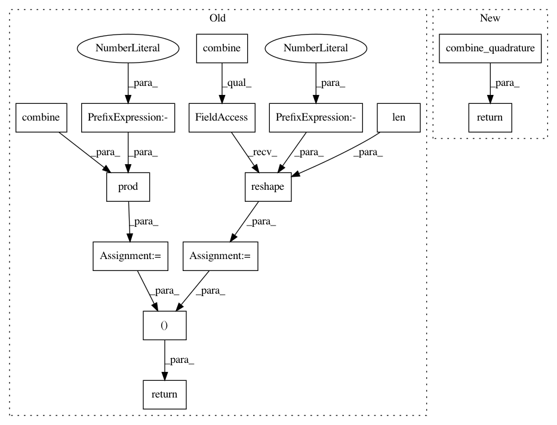

14f8c06029dee29f6e3c801f69872c4ad426f79c,chaospy/quadrature/gauss_radau.py,,quad_gauss_radau,#Any#Any#Any#Any#Any#Any#,71
Before Change
abscissas, weights = coefficients_to_quadrature(coefficients)
abscissas = combine(abscissas).T.reshape(len(dist), -1)
weights = numpy.prod(combine(weights), -1)
return abscissas, weights
def radau_jakobi(coeffs, fixed_point):
After Change
abscissas, weights = coefficients_to_quadrature(coefficients)
return combine_quadrature(abscissas, weights)
def radau_jakobi(coeffs, fixed_point):
In pattern: SUPERPATTERN
Frequency: 3
Non-data size: 14
Instances
Project Name: jonathf/chaospy
Commit Name: 14f8c06029dee29f6e3c801f69872c4ad426f79c
Time: 2019-08-10
Author: jonathf@gmail.com
File Name: chaospy/quadrature/gauss_radau.py
Class Name:
Method Name: quad_gauss_radau
Project Name: jonathf/chaospy
Commit Name: 14f8c06029dee29f6e3c801f69872c4ad426f79c
Time: 2019-08-10
Author: jonathf@gmail.com
File Name: chaospy/quadrature/gauss_kronrod.py
Class Name:
Method Name: quad_gauss_kronrod
Project Name: jonathf/chaospy
Commit Name: 14f8c06029dee29f6e3c801f69872c4ad426f79c
Time: 2019-08-10
Author: jonathf@gmail.com
File Name: chaospy/quadrature/gaussian.py
Class Name:
Method Name: quad_gaussian